2012-03-05T20:07:00.004-08:00
Link Latte 175
Link Latte 175
#175 - Week of March 4, 2012Titanic May Have Sunk Because of an Optical Illusion - [!]Giant Unseen Structure in Our Galaxy - [wow space]The Monster Engine: Painting Children's Nightmares - [art]Gorgeous Art Deco RV Creation - [wow auto]Extract Your Own DNA?! Here's How - [geek info]To Eat, or Not to Eat? - [weird photo]Soviet Space Propaganda Posters - [cool vintage]Every World Press Photo Winner - [cool collection]Shell-tastic Shelter by Kotaro Ide - [architecture]Persians Had Refrigerators Back in 400 BC - [history]The Museum of Forgotten Art Supplies - [cool site]Great Concepts of Next-Gen iPad - [gadgets]Most Epic Air Battles & Bombing Campaigns- [history]The Largest Set in Movie History - [abandoned]Alien-looking Rust Ball on a Tree, more, info - [gross photo]Any Day Now: Antimatter Discoveries - [science]Antique Machinery Scans - [almost steampunk]Car Interiors (Great Tumbler) - [cool site]Cool Earthquaker Devices - [not what you'd think]Once Upon a Time: Antique Websites, info - [good old web]Free Online Flight Simulator, info - [boredom fix]Rocket Assisted Take-Off, info - [wow video]Another Unbelievable Take-Off - [wow video]Cool: Wood Sculptures for Animated Shadows - [wow video]Proof: Roommates Steal His Food! - [fun video]Stick Insect Hatching! - [wow video]Nullabor: The Longest Road - [short movie, has nsfw part]Biggest Failed Websites - [compilation]Worst Figure and Worst Leg Ever - [Photoshop disasters]Quality-Schnallity to the Rescue! - [promotion]SEE ALL OTHER LINK LATTE ISSUES HERE
 #175
#175 -
Week of March 4, 2012Titanic May Have Sunk Because of an Optical Illusion -
[!]Giant Unseen Structure in Our Galaxy -
[wow space]The Monster Engine: Painting Children's Nightmares -
[art]Gorgeous Art Deco RV Creation -
[wow auto]Extract Your Own DNA?! Here's How -
[geek info]To Eat, or Not to Eat? -
[weird photo]Soviet Space Propaganda Posters -
[cool vintage]Every World Press Photo Winner -
[cool collection]Shell-tastic Shelter by Kotaro Ide -
[architecture]Persians Had Refrigerators Back in 400 BC -
[history]The Museum of Forgotten Art Supplies -
[cool site]Great Concepts of Next-Gen iPad -
[gadgets]Most Epic Air Battles & Bombing Campaigns-
[history]The Largest Set in Movie History -
[abandoned]Alien-looking Rust Ball on a Tree, more, info -
[gross photo]Any Day Now: Antimatter Discoveries -
[science]Antique Machinery Scans -
[almost steampunk]Car Interiors (Great Tumbler) -
[cool site]Cool Earthquaker Devices -
[not what you'd think]Once Upon a Time: Antique Websites, info -
[good old web]Free Online Flight Simulator, info -
[boredom fix]Rocket Assisted Take-Off, info -
[wow video]Another Unbelievable Take-Off -
[wow video]Cool: Wood Sculptures for Animated Shadows -
[wow video]Proof: Roommates Steal His Food! -
[fun video]Stick Insect Hatching! -
[wow video]Nullabor: The Longest Road -
[short movie, has nsfw part]Biggest Failed Websites -
[compilation]Worst Figure and Worst Leg Ever -
[Photoshop disasters]Quality-Schnallity to the Rescue! -
[promotion]SEE ALL OTHER LINK LATTE ISSUES HERE
2012-02-28T20:02:00.010-08:00
Surreal Abandoned Amusement Park in Berlin
Surreal Abandoned Amusement Park in Berlin
"QUANTUM SHOT" #757Link - article by Avi AbramsPast glories of Socialist fun & games deserted and overgrown with weedsWe here at DRB are big lovers of abandoned amusement parks, see for example our Abandoned Disney and Abandoned Amusement Parks in Asia. These places are truly haunting and provide an incredible venue for urban exploration, atmospheric photography and, perhaps, even for a location or two for low-budget movies.Spreepark PlanterWald, near Treptower Park in Berlin: complete with fallen dinosaurs!(images credit: Sara, Sarah Porteus)Many such deteriorating parks are hidden behind security barriers, or camouflaged with faux facades in an effort to pretend that they do not exist. But this particularly fantastic place, Spreepark PlanterWald, is "hidden in plain view". It is located smack in the middle of a major European city - Berlin - close to the much-visited Treptower Park. It is clearly marked on every map - and does not seem to be closely guarded. Standing abandoned since 2001, it even has its own website. In other words, it could be a perfect "first foray" for any budding urban explorer or abandoned places photographer.(image credit: Ray Kippig)The ferris wheel is always the highlight, the most prominent feature of such places, and the Planterwald ferris wheel does not disappoint:(images credit: Sarah Porteus, Julian White)When it opened in 1969 as Kulturpark Planterwald, it was the "only constant entertainment park in the GDR, and the only such park in either East or West Berlin". However, the Berlin Senate did not seem to have provided for enough parking space... which is quite silly, all things considered. Plus, the forest around the park was deemed to be doomed from the impact of visiting crowds. In any case, the socialist and then private owners were left with a bunch of debt and the place got suspended in limbo... But the story does not end there (read on).The bugs, the bugs are enjoying it! -(image credit: Laura Wedlake)Indeed, this former amusement park is situated centrally, located close to famous World War Two monument in Treptower Park, and was very popular in its day. It is fitfully surrounded by the lush forest, which casts leafy shadows on rusted remains of roller coaster tracks and hides the quaint carousel rides in the middle of overgrown ferns.Going into the maw of a beast:(image credit: Stephen O'Rourke)Roller coaster promises wild rides into the foliage:(image credit: Mike)Some traces of Indiana Jones, or Amazon adventures:(image credit: Julian Turner)(image credit: Morgen Nebel)Very inviting buttons on an old control panel - it's hard not to push them:(images credit: 1, Esbjorn Guwallius / Berlinow.com)There are cups and teapots for a quick breakfast fix:(images credit: Dennis Gerbeckx)Out of the mist appears a Viking ship:(image credit: Morgen Nebel)Let's go for a drive with Grouch Marx! -(image credit: Matt Chisholm)Dinosaurs are particularly extinct in this locationThey are dead, fallen, rusted out - turned into a joke, or weird headless monsters:(images credit: Dennis Gerbeckx, Sebastian Niedlich)(image credit: Gregor)(images credit: Darris, Dennis Gerbeckx)Let's go hunting! -(image credit: Morgen Nebel)Graceful swans look upon the dinosaur graveyard with mixed feelings:(image credit: Dennis Gerbeckx)This dragon head still seems to be in a good condition:(image credit: Sebastian Niedlich)The story of park's decline is rife with smuggling and criminal overtones: when in 2001 park was declared insolvent, one of the employees (or park owners - Norbert Witte) arranged to move some attractions all the way across the ocean to Peru (where he moved with his family and tried to open another Lunapark there). When his venture failed there as well, he was caught smuggling cocaine (valued at $20 million) back to Germany inside the mast of one of the ships ("Flying Carpet" ride)!Visit Flickr pool for more images of Planterwald here and here.Treptower Park holds a few wonders of its own, tooHere is an interesting sculpture from the Socialist Avantgarde era, dedicated to the World Youth Festival in 1973 in East Berlin:(left image credit: Sebastian Panwitz, right image Veronica Lehner)On the right image above we see the futuristic house Futuro peaking from the shrubbery... not in pristine condition anymore, sadly.Treptower Park has an interesting drinking fountain (left) and across the river, in Stralau, there are some marvelous wall murals (right):(images credit: Hajo)To give you an idea of the park's surroundings, here is a medieval-style bridge and a view of the morning Treptow Park forest:(images credit: Klaus Bruk, Rene Reimann)In the middle of the park, there is another gem: Archenhold Sternwarte observatory, where Einstein lectured on the Theory of Relativity in 1915. It houses the longest 21m reflecting telescope in the world - which looks like a surreal gun pointed into the sky from the building:(images via 1, 2)In the meantime, some tree trunks in the Treptower Park were subtly enhanced by a local artist - Walter Mason (by simply drawing a couple of lines in the snow):(image credit: Walter Mason)And just across the river, in Alt Stralau, there are more fascinating abandonments waiting to be explored:(image credit: Nixenkai)CONTINUE TO "ABANDONED AMUSEMENT PARK IN ASIA"READ THE REST OF OUR "ABANDONED PLACES" CATEGORY ->
Share
Tweet
"QUANTUM SHOT" #757
Link - article by Avi Abrams
Past glories of Socialist fun & games deserted and overgrown with weeds
We here at DRB are big lovers of abandoned amusement parks, see for example our Abandoned Disney and Abandoned Amusement Parks in Asia. These places are truly haunting and provide an incredible venue for urban exploration, atmospheric photography and, perhaps, even for a location or two for low-budget movies.
Spreepark PlanterWald, near Treptower Park in Berlin: complete with fallen dinosaurs!
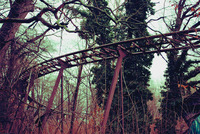
(images credit: Sara, Sarah Porteus)
Many such deteriorating parks are hidden behind security barriers, or camouflaged with faux facades in an effort to pretend that they do not exist. But this particularly fantastic place, Spreepark PlanterWald, is "hidden in plain view". It is located smack in the middle of a major European city - Berlin - close to the much-visited Treptower Park.
It is clearly marked on every map - and does not seem to be closely guarded. Standing abandoned since 2001, it even has its own website. In other words, it could be a perfect "first foray" for any budding urban explorer or abandoned places photographer.
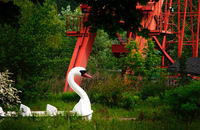
(image credit: Ray Kippig)
The ferris wheel is always the highlight, the most prominent feature of such places, and the Planterwald ferris wheel does not disappoint:
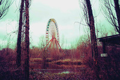
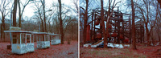
(images credit: Sarah Porteus, Julian White)
When it opened in 1969 as Kulturpark Planterwald, it was the "only constant entertainment park in the GDR, and the only such park in either East or West Berlin". However, the Berlin Senate did not seem to have provided for enough parking space... which is quite silly, all things considered. Plus, the forest around the park was deemed to be doomed from the impact of visiting crowds. In any case, the socialist and then private owners were left with a bunch of debt and the place got suspended in limbo... But the story does not end there (read on).
The bugs, the bugs are enjoying it! -

(image credit: Laura Wedlake)
Indeed, this former amusement park is situated centrally, located close to famous World War Two monument in Treptower Park, and was very popular in its day. It is fitfully surrounded by the lush forest, which casts leafy shadows on rusted remains of roller coaster tracks and hides the quaint carousel rides in the middle of overgrown ferns.
Going into the maw of a beast:
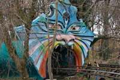
(image credit: Stephen O'Rourke)
Roller coaster promises wild rides into the foliage:
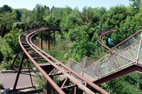
(image credit: Mike)
Some traces of Indiana Jones, or Amazon adventures:
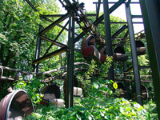
(image credit: Julian Turner)
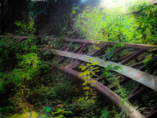
(image credit: Morgen Nebel)
Very inviting buttons on an old control panel - it's hard not to push them:
(images credit: 1, Esbjorn Guwallius / Berlinow.com)
There are cups and teapots for a quick breakfast fix:
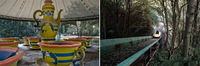
(images credit: Dennis Gerbeckx)
Out of the mist appears a Viking ship:
(image credit: Morgen Nebel)
Let's go for a drive with Grouch Marx! -
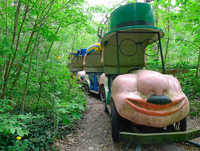
(image credit: Matt Chisholm)
Dinosaurs are particularly extinct in this location
They are dead, fallen, rusted out - turned into a joke, or weird headless monsters:
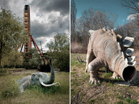
(images credit: Dennis Gerbeckx, Sebastian Niedlich)
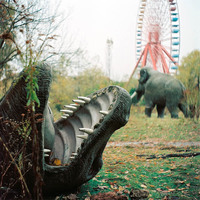
(image credit: Gregor)
(images credit: Darris, Dennis Gerbeckx)
Let's go hunting! -
(image credit: Morgen Nebel)
Graceful swans look upon the dinosaur graveyard with mixed feelings:
(image credit: Dennis Gerbeckx)
This dragon head still seems to be in a good condition:
(image credit: Sebastian Niedlich)
The story of park's decline is rife with smuggling and criminal overtones: when in 2001 park was declared insolvent, one of the employees (or park owners - Norbert Witte) arranged to move some attractions all the way across the ocean to Peru (where he moved with his family and tried to open another Lunapark there). When his venture failed there as well, he was caught smuggling cocaine (valued at $20 million) back to Germany inside the mast of one of the ships ("Flying Carpet" ride)!
Visit Flickr pool for more images of Planterwald here and here.
Treptower Park holds a few wonders of its own, too
Here is an interesting sculpture from the Socialist Avantgarde era, dedicated to the World Youth Festival in 1973 in East Berlin:
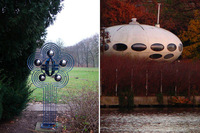
(left image credit: Sebastian Panwitz, right image Veronica Lehner)
On the right image above we see the futuristic house Futuro peaking from the shrubbery... not in pristine condition anymore, sadly.
Treptower Park has an interesting drinking fountain (left) and across the river, in Stralau, there are some marvelous wall murals (right):
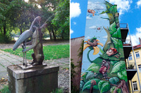
(images credit: Hajo)
To give you an idea of the park's surroundings, here is a medieval-style bridge and a view of the morning Treptow Park forest:
(images credit: Klaus Bruk, Rene Reimann)
In the middle of the park, there is another gem: Archenhold Sternwarte observatory, where Einstein lectured on the Theory of Relativity in 1915. It houses the longest 21m reflecting telescope in the world - which looks like a surreal gun pointed into the sky from the building:
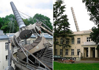
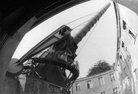
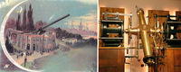
(images via 1, 2)
In the meantime, some tree trunks in the Treptower Park were subtly enhanced by a local artist - Walter Mason (by simply drawing a couple of lines in the snow):
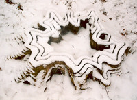
(image credit: Walter Mason)
And just across the river, in Alt Stralau, there are more fascinating abandonments waiting to be explored:
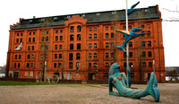
(image credit: Nixenkai)
CONTINUE TO "ABANDONED AMUSEMENT PARK IN ASIA"
READ THE REST OF OUR "ABANDONED PLACES" CATEGORY ->

|